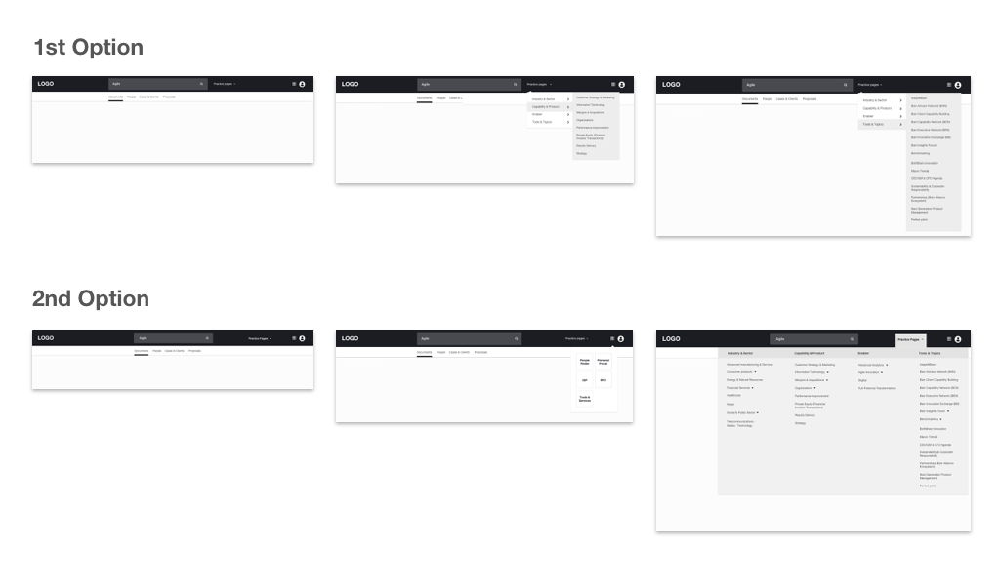

done
There was two systems working at the same time (an old system and a more recent one). The revamped system needed improvements to assure a full adoption.
A large consulting company needed to improve their internal information system. Sales executives, managers and consultants had issues finding relevant data for their pitches, and they comissioned us to improve the current navigation and structure for the platform.
There was two systems working at the same time (an old system and a more recent one). The revamped system needed improvements to assure a full adoption.
The current platform needed improvements at the findability of the content; users cannot find relevant slides easily.
The homepage needed some improvements too; users often do not know what information they can find in the website, because this page wasn't descriptive enough.
After sucessive rounds of wireframing with the Product Team from the company, there was a need to make a decision between two navigation designs to know which could match the way users find the information.

From the two options I designed two prototypes on Invision and Maze in order to test which navigation patterns would be more adequate for users. I created two tasks or mazes to test the options.
In order to improve the findability of the information in the platform, We proposed a redesign for the Homepage. I based my new proposal on data found in the Analytics module from the old website, where we could extract some trends from the search activity.